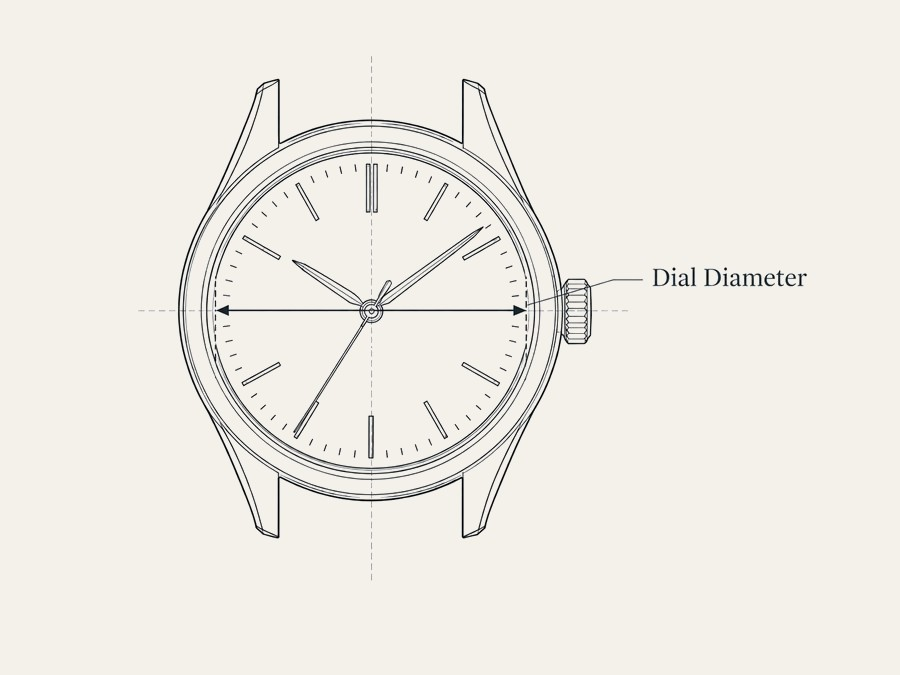

goldilugs is built and run by one person, working through the details slowly and in the open rather than chasing volume.
Watch curation, almost universally, treats case diameter as the only number that matters — and mostly assumes a wrist that can carry 40mm or more without a second thought. If you're working with a smaller or slender wrist, the actual useful information — lug-to-lug length, lug width, how a case wears in practice — is usually missing, or buried in a comments thread somewhere.
goldilugs starts from the opposite direction: fit first, everything else second. Every piece is chosen with a specific wrist range in mind and measured, not estimated, before it's listed.
The pace here is deliberate. This is a side project run around a full-time job, which means growth happens in small, considered steps: building a reputation and a small amount of capital with well-chosen, lower-priced pieces before moving into anything more expensive.
Every watch comes with the specifications laid out plainly — reference number, movement, condition, provenance where it exists — the way a technical sheet would present them, not the way a sales listing would. The aim is for someone who cares about the details to be able to make a decision without having to ask.

This isn't a storefront trying to look like a big operation. It's one person's fairly solitary interest — watches, alongside a few other precise, unhurried hobbies like coffee — turned into something more structured. The writing and the research come from genuinely working through the material, not from a marketing brief.
If that's the kind of thing you'd rather read than be sold to, the journal is where most of that will end up.